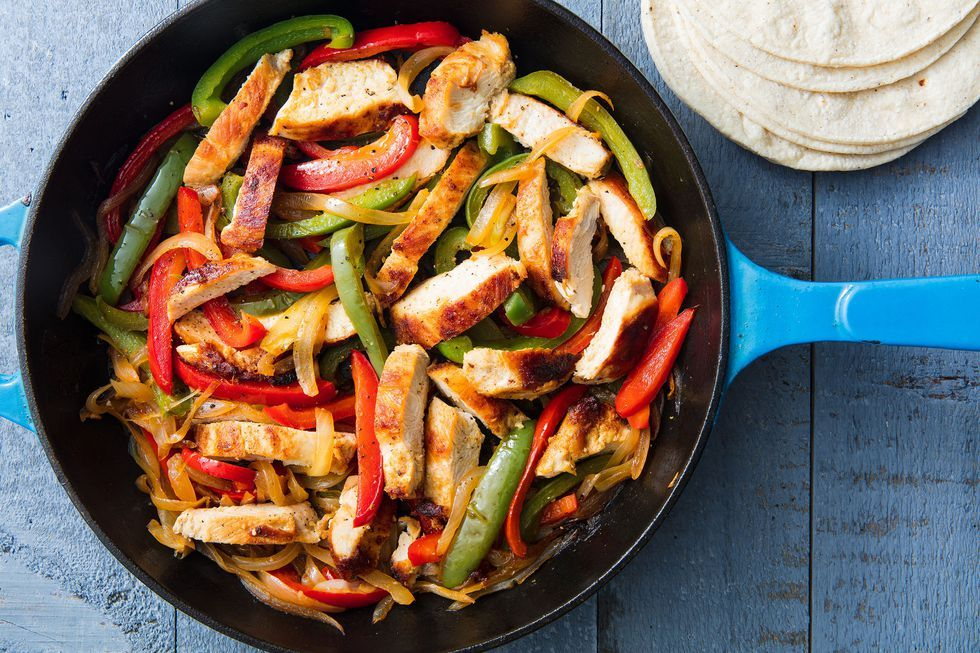

Fajitas

Description
We can thank the cuisine of Tex-Mex for the classic fajita. Originally, the term referred to a grilled strip of meat served in a tortilla.
hese days you can find steak, chicken, shrimp, or even vegetarian fajitas. Minimal prep and minimal cook time means these can be on your dining room table FAST.
Top them off with sour cream, pico de gallo, and guac and for an extra special treat go ahead and make your own flour tortillas!
If you like a little extra spice on your fajitas go ahead and add some chili powder, cayenne, or paprika!
Ingredients
- 1/2 cup plus 1 tbsp. extra-virgin olive oil
- 1/2 cup plus 1 tbsp. extra-virgin olive oil
- 1/4 cup lime juice, from about 3 limes
- 2 tsp.cumin
- 1/2 tsp. crushed red pepper flakes
- 1 lb. boneless skinless chicken breasts
- Kosher salt
- Freshly ground black pepper
- 2 bell peppers, thinly sliced
- 1 large onion, thinly sliced
- Tortillas, for serving
Steps
- In a large bowl, whisk together 1⁄2 cup oil, lime juice, cumin, and red pepper flakes.
Season chicken with salt and pepper, then add to bowl and toss to coat. Let marinate in the fridge at least 30 minutes and up to 2 hours.
-
When ready to cook, heat remaining tablespoon oil in a large skillet over medium heat.
Add chicken and cook until golden and cooked through, 8 minutes per side. Let rest 10 minutes, then slice into strips.
-
Add bell peppers and onion to skillet and cook until soft, 5 minutes. Add chicken and toss until combined. Serve with tortillas.
Home